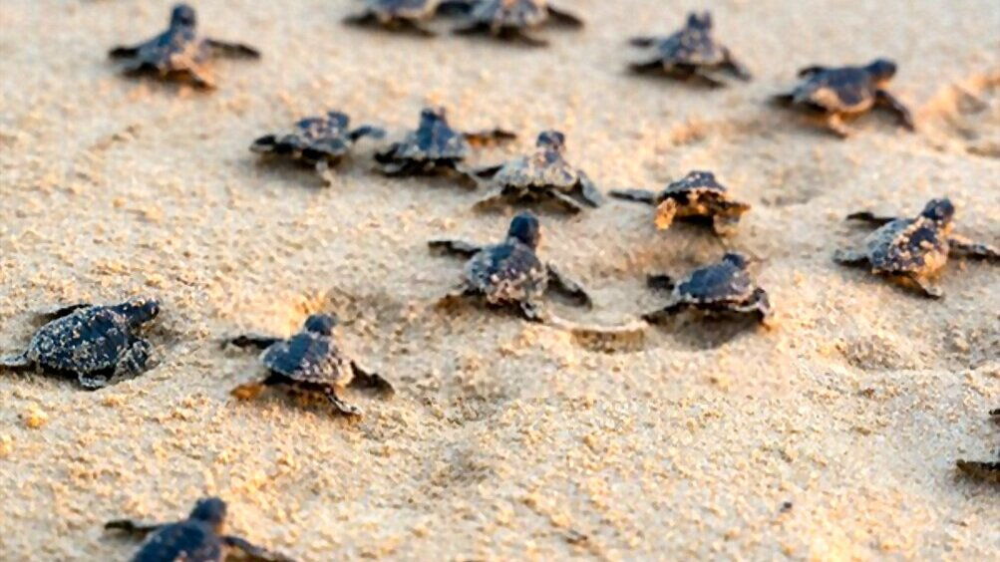

<!DOCTYPE html>
<html>
    <head>
        <title>Hatchery Monitoring</title>
        <link rel="stylesheet" href="../style.css">
    </head>
</html>
<body>
    <header class="project-head">
        
        <div><h3>Hatchery Monitoring System</h3></div>
        <div><a href="../main.html"> back to home</a></div>    
        
    </header>

    <main>
        <section>
        <h2>Description</h2>
        <div class="explaination">
            
            This project was inspired by the need to protect 
            endangered sea turtles in Malaysia. I designed a smart 
            hatchery system that monitors and controls environmental 
            conditions crucial for turtle egg incubation. 
            The goal was to increase hatching success rates and 
            reduce human error, while enabling remote monitoring, 
            offline logging, and climate adaptation features.
        </div>
        </section>
        <section>
            <h2>Problem Statement</h2>
            <div class="explaination">
                
                Sea turtle eggs are sensitive to temperature, humidity, 
                and light levels. Inconsistent or extreme environmental 
                conditions — such as heatwaves or heavy rain — can negatively 
                affect hatch rates and even alter the sex ratio of hatchlings 
                (temperature-dependent sex determination). Most hatcheries rely 
                on manual monitoring, which is labour-intensive, inaccurate, and delayed.
            </div>
        </section>
        <section>
            <h2>Appendix</h2>
            <div class="appendix-pic">
                
                
                
            </div>
        </section>     
        <section class="components">
            <h2>Components Used</h2>
            <table>
                <tr>
                  <th>Components</th>
                  <th>Description</th>
                </tr>
                <tr>
                  <td>Microcontroller</td>
                  <td>ESP32 with built-in Wi-Fi + LoRa module</td>
                </tr>
                <tr>
                  <td>Sensors</td>
                  <td>DHT22 (Temp & Humidity), LDR (Light)</td>
                </tr>
                <tr>
                  <td>Monitoring</td>
                  <td>LCD screen + optional mobile interface</td>
                </tr>
              </table>
        </section>
        <section>
            <h2>What I Learned</h2>
            <ul>
                <li>Iot Sensors</li>
                <li>Python data logging</li>
                <li>Modular design (sensor modules, 
                power units) made maintenance easier.</li>
                <li>Temperature sensitivity in eggs requires tight control 
                — especially in tropical climates.</li>
            </ul>
        </section>
        
        <video src="" alt="demo video"></video>
    </main>
</body>